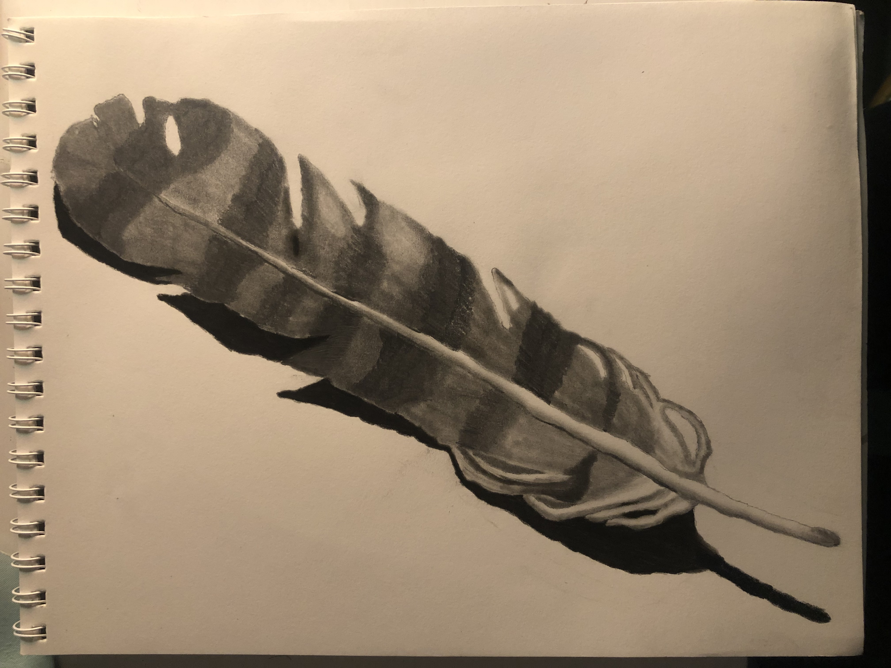
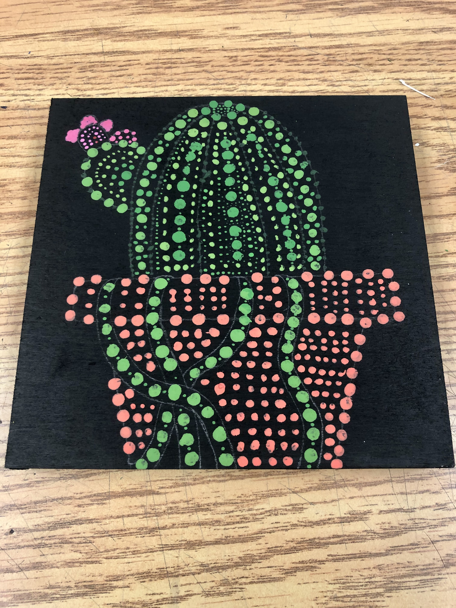
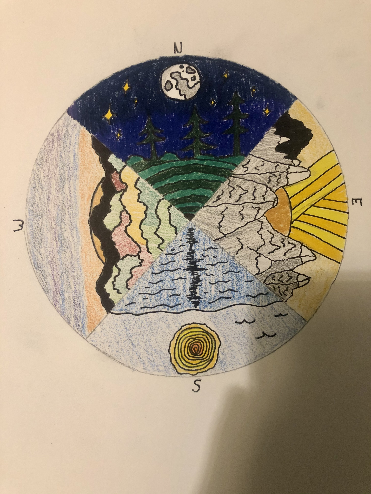
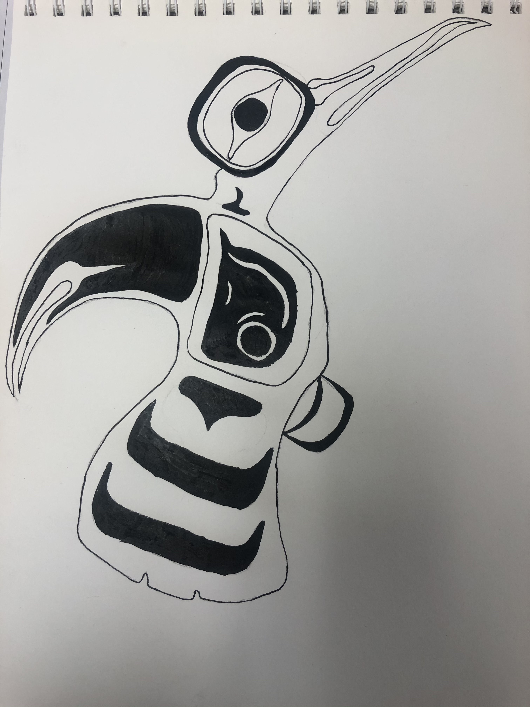
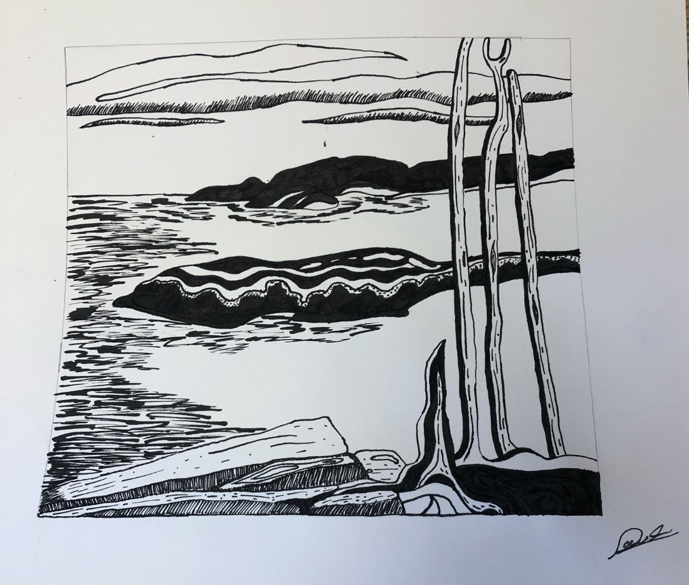
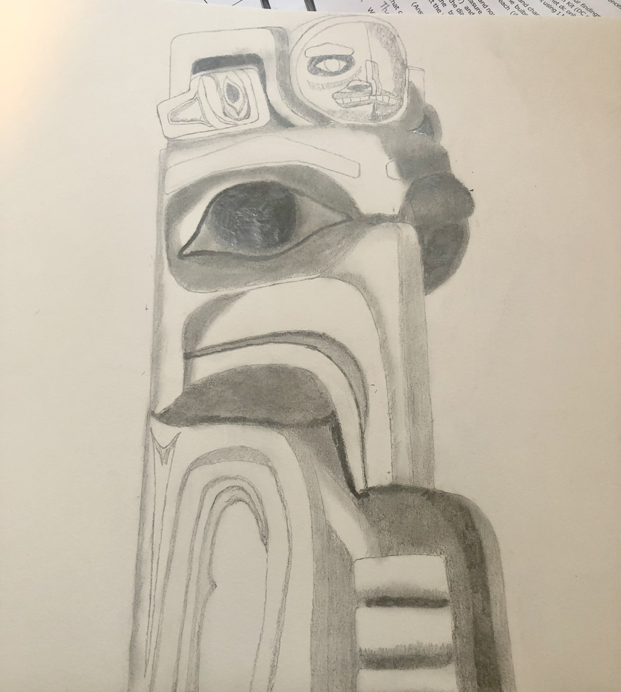

The Beauty Of Art
My love for art started around the first grade. Drawing and coloring were taught in class and it was one of the things I would look forward to doing every day. This kept growing, and by the 5th Grade I was drawing people and characters in a semi-realistic manner. My mom was a huge influence on me because she's an artist and seeing her paint and draw all the time, it made me want to be just like her. She would help me develope my skills and give me the motivation to keep drawing. She kept me motivate to continue giving it my all. I would continue to draw until grade nine. I would stop drawing because I really just lost my interest in it. But recently I've been trying to reconnect with my more artistic side of my personality.
Here's A few Of My Drawings From Past Years:





